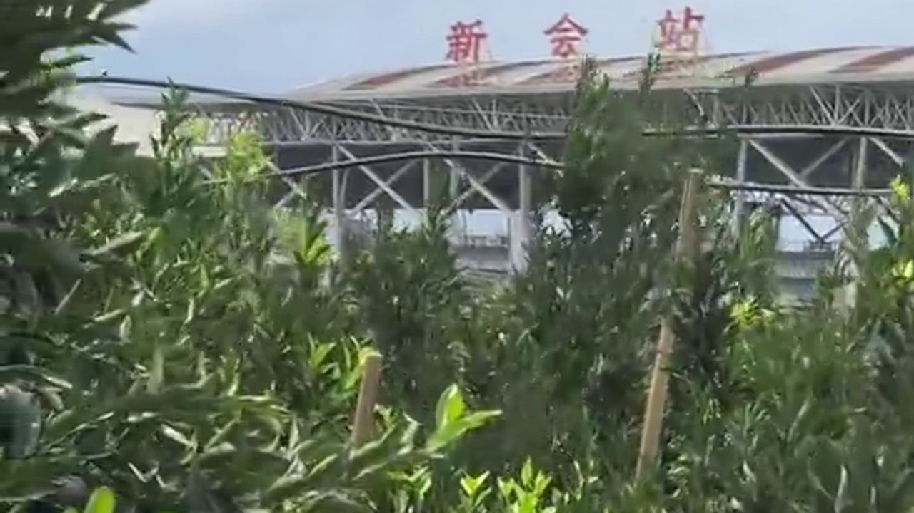
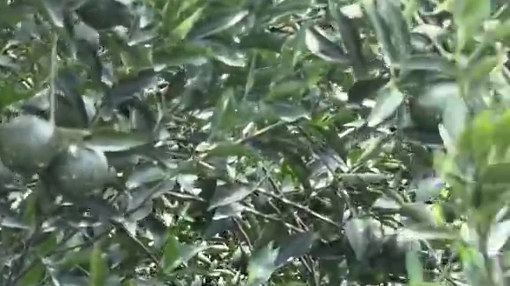
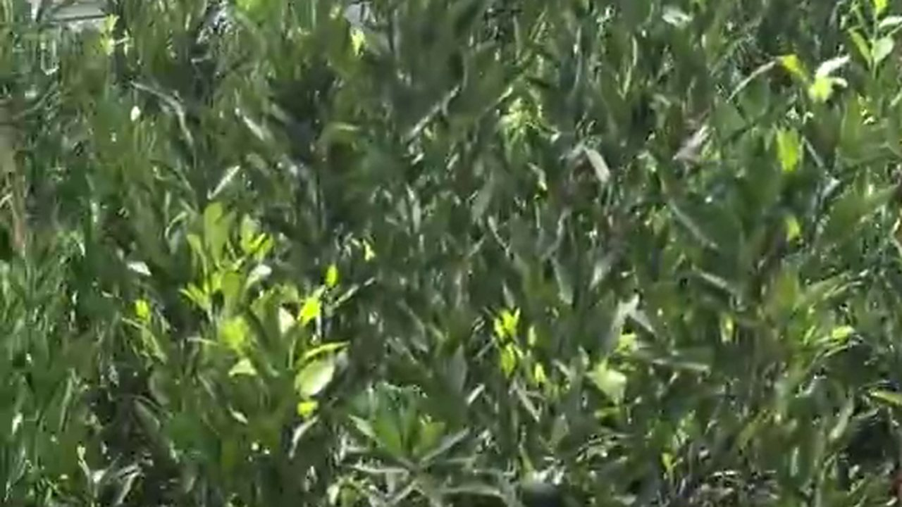
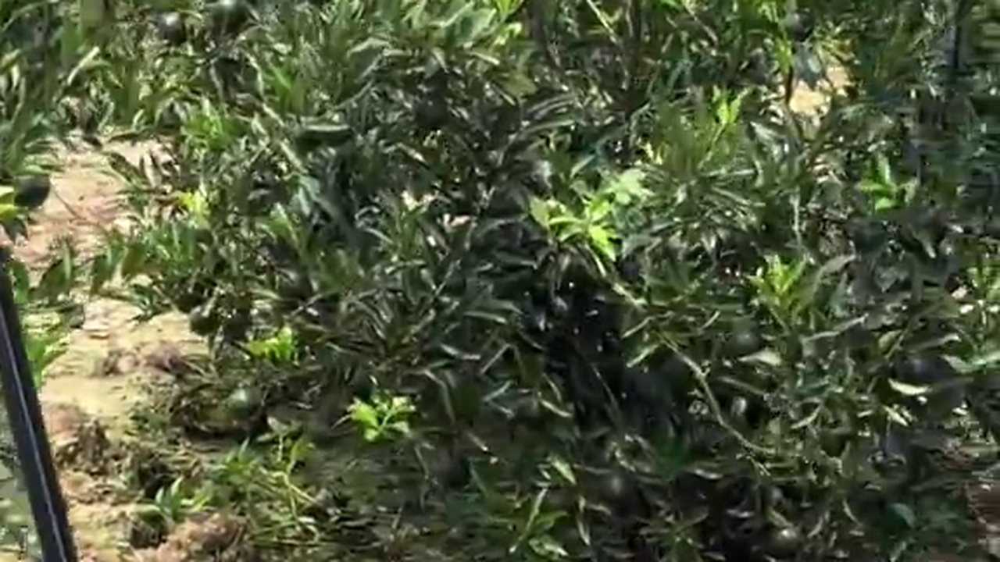
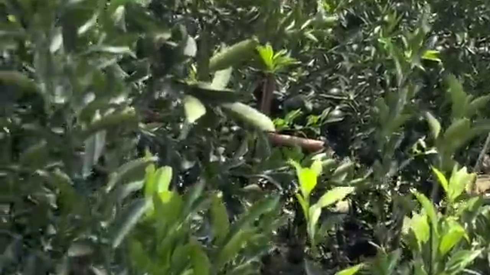

從新會站出來，車開不到幾分鐘，路兩邊就全是柑樹了。十月的果圍，青果還掛在枝上，風一過，整片樹葉翻起銀綠色。
根叔在路口等我。他種了二十多年圈枝柑，手上全是口子。他沒多說，只講了一句：
「跟我行一行。同一片園，唔同嘅行，價錢差五毫。」
五毛，聽起來不多。但一斤鮮果的地頭價才兩三塊——五毛，就是兩成。
一、同一片新會，為什麼還有「微產區」

大家都知道新會陳皮講「核心產區」：天馬、梅江、茶坑、東甲。但根叔說，那只是一個大圈——圈裡面還有小圈。
「你企喺呢度望，」他指着果圍，「東邊嗰幾行，早晨最先曬到太陽，下晝四點就收咗熱；西邊嗰幾行，太陽一路曬到落山，地表熱到夜晚都散唔走。」
同一片地、同一批苗、同一套工序，出來的皮卻會有差別——這就是行內講的微產區。決定因素說來簡單：向陽、通風、地勢、水。做起來，是幾十年的經驗。
二、向陽的果，到底好在哪

根叔摘了一顆青果，指甲在皮上一劃，清冽的柑香立刻散出來。他讓我對着光看：
「你睇下，一粒粒咁凸起嘅，就係油室。向陽嗰幾行，油室生得飽、皮厚身重；背陰嘅，皮薄、油室空。」
原因不複雜：光照足，光合產物多，果實的糖分與揮發油積累得更好；通風好，濕氣不積，病害少，果皮乾淨；地勢稍高的那幾行，雨季不積水，根系不會悶壞。
這些差別在鮮果上看只是「靚唔靚」，但一進入陳化，就變成香氣的底子——油室飽的皮，三年後才存得住那股香。
三、十月巡園，先看樹勢再看果

「好多人一入園就睇果，」根叔說，「我係先睇樹。」
樹勢是判斷果品質的第一眼：葉色濃綠有光、枝條粗壯、葉片厚實的樹，果通常不會差；葉色發黃、落葉多、枝條細弱的，即使果看起來漂亮，皮也往往薄。
看完樹，再看三樣：
· 油室：對光看，一粒粒凸起、分布均勻的才好；
· 皮厚與身重：同一品種，拿在手上有分量的，皮通常更厚；
· 果形：勻稱、果臍完整的，開皮時三瓣才漂亮，不傷油室。
四、水：地上一條條管，決定皮的厚薄

走進果圍深處，地上是一條條黑色的滴灌管線。這在新會這幾年的規模化果園裡很常見——什麼時候給水、給多少，都有人管着。
為什麼水這麼重要？新會這個地方本來就「濕」：三江交匯、鹹淡水交替，果園長年溫潤多濕。好處是柑樹長得旺，壞處是水一多，果皮就薄、糖分就淡；採收前要是連着下雨，皮吸了水，開皮後極容易回潮發霉。
所以有經驗的果農，在採收前那一個月會控水：該灌的時候灌，該停的時候停。水管理做得好，皮才厚、油室才飽、曬出來的皮才不容易壞。
「所以收皮唔止睇品種，仲要睇佢一個月前點淋水。」
五、貴五毛值不值？收購商算的是三年後的帳

回到最初的問題：向陽那幾行的果，為什麼能多賣五毛？
因為收購商算的不是今天的帳，是三年後的帳：
· 油室飽的皮，曬乾後失重少——三斤多鮮果出一斤皮，皮薄的出皮率更低；
· 皮厚的皮，陳化三年後香氣更沉，賣得起價；
· 病害少、皮乾淨的，倉儲損耗低——一倉皮裡壞掉一成，等於白做。
把這三筆帳加起來，五毛就不貴了。貴的是那五毛，省下的是三年的倉租、人工，和一次翻倉的心血。
「我唔識講咩大道理。我只知，向陽嗰幾行，我留俾識貨嘅人。」
常見問題
什麼是「微產區」？同一片新會為何價格有差？核心產區（天馬、梅江、茶坑、東甲）之外，同一片果圍內不同行列也有差別，主要來自向陽、通風、地勢與水管理，這就是微產區，也是收購價差五毛到一塊的原因。
向陽的果為什麼更好？光照足，光合產物多，糖分與揮發油積累更好；通風好、濕氣不積，病害少；地勢稍高不積水，根系健康。結果就是油室更飽、皮更厚，陳化後香氣更沉。
採收前要怎麼看果？先看樹勢（葉色濃綠、枝條粗壯），再看三樣：油室（對光看是否一粒粒凸起）、皮厚與身重（同等級下拿在手上有分量）、果形（勻稱、果臍完整，開皮三瓣才漂亮）。
滴灌會影響陳皮品質嗎？會。新會本來就溫潤多濕，水一多皮就薄、糖分淡，採收前遇雨還容易回潮發霉。有經驗的果農會在採收前一個月控水，皮才厚、油室才飽。
貴五毛到底值不值？算三筆帳：出皮率（油室飽的皮失重少）、陳化後的香氣與售價、倉儲損耗（病害少的皮壞得少）。加起來，五毛通常划算。
消費者怎麼知道自己買的是不是核心圍的皮？問產區要具體到村與圍；看內囊（自然陳化疏鬆、有雪花狀風化痕跡）；掃溯源碼核對採收年份與入倉記錄。三樣能對上，基本可靠。
結語：產區是地圖，微產區是手藝
走出果圍時，太陽已經偏西。根叔指着東邊那幾行說：「嗰幾行我留咗好多年，颱風打過、蟲害來過，都冇砍。」
產區是一張地圖，誰都能指着說「我喺新會」；但微產區是手藝——是幾十年裏一次次判斷哪一行留、哪一行改，累積下來的結果。
同一片新會，差五毛，差的就是這份眼力。
想知道十月開鐮之後果子是怎麼過磅進場的，看這篇《十月開鐮：新會柑開採了》；想弄清青皮與陳皮的分別，翻翻這篇《九月的青柑上市了：為什麼行家開始「存青皮」？》。
下期預告：那幾行向陽老樹，根叔今年留了不賣。他說要拿來做一批「自己喝的皮」——自己喝的皮，工序上有什麼不一樣？下期講。